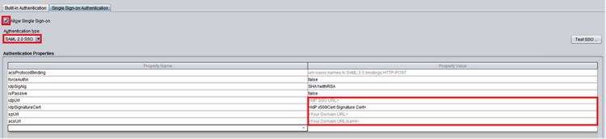

SciForma supports an SP-initiated SAML flow. For the convenience of your end users, Okta recommends that you hide the SciForma app and set up a Bookmark app with the SciForma logo after you complete this SAML setup. For instructions on setting up a Bookmark app and hiding the original app, see Simulating an IDP-initiated Flow with the Bookmark App.
Attach the following Single Sign On URL to the message.
Sign in to the Okta Admin app to generate this variable.Select the link below to download a Certificate. Then, attach it to the message.
Sign in to the Okta Admin app to generate this variable.
Enter the following idpUrl:
Sign in to the Okta Admin app to generate this variable.Enter the following idpSignatureCert:
Sign in to the Okta Admin app to generate this variable.Enter the following spUrl after substituting your Sciforma subdomain for <your_subdomain>.
https://<your_subdomain>.sciforma.net/sciforma/
Enter the following acsUrl after substituting your Sciforma subdomain for <your_subdomain>.
https://<your_subdomain>.sciforma.net/sciforma/saml/post
Note: An SP-initiated flow is supported from the URL https://<your_subdomain>.sciforma.net/main.html, where <your_subdomain> is the name of your SciForma subdomain. IdP-initiated flows and Just in Time (JIT) provisioning are not supported.